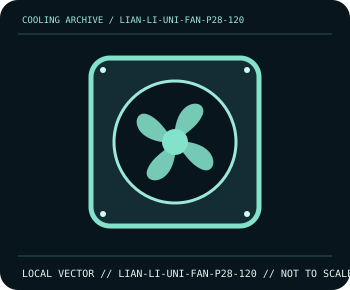

[ INDIVIDUAL COMPONENT // COOLING ]
Lian Li UNI FAN P28 120
28 mm-thick 120 mm high-pressure PWM fan with interlocking frame links.

IDENTIFICATION: Confirm the complete model, revision, included mounting hardware, and host requirements against the manufacturer documentation before installation.
Manufacturer specifications
| Catalog subcategory | Case and radiator fans |
|---|---|
| Exact model | Lian Li UNI FAN P28 120 |
| Frame | 120 × 120 × 28 mm; thicker than a standard 25 mm fan. |
| Speed and performance | 300–2400 rpm; up to 92 CFM and 4.79 mm H₂O static pressure in the manufacturer’s performance specification. |
| Bearing and control | Fluid dynamic bearing; 4-pin PWM connection. |
| Compatibility | Fits a 120 mm opening only if the extra 3 mm thickness and linked-frame/cable clearance are available; use a 4-pin PWM header/controller. |
Compatibility and installation
Measure case, radiator, and heatsink clearances for the 28 mm frame before ordering. Follow the P28’s linked-frame wiring directions and avoid assuming that a standard 25 mm screw length or hub splitter is appropriate.
- Disconnect system power before installation or rewiring, and follow the exact model manual.
- After assembly, confirm fan/pump operation and monitor temperatures before sustained workload.
Manufacturer source
- Lian Li — UNI FAN P28 product specificationsManufacturer product documentation; check the current model revision, package contents, and local socket kit before purchase or installation.
This static catalog entry is an identification aid, not a compatibility guarantee; fit and ratings can vary by revision, mounting kit, and host configuration.